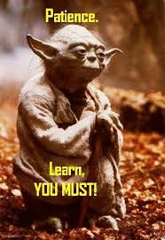
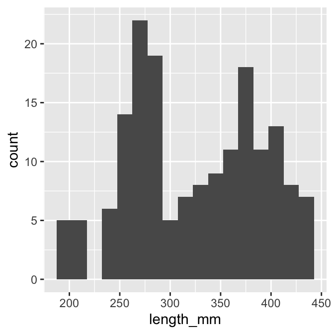
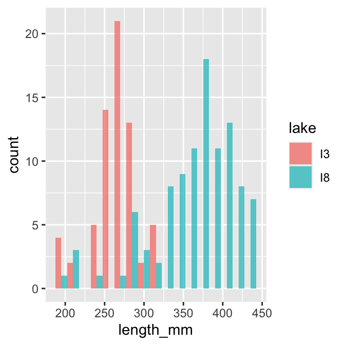
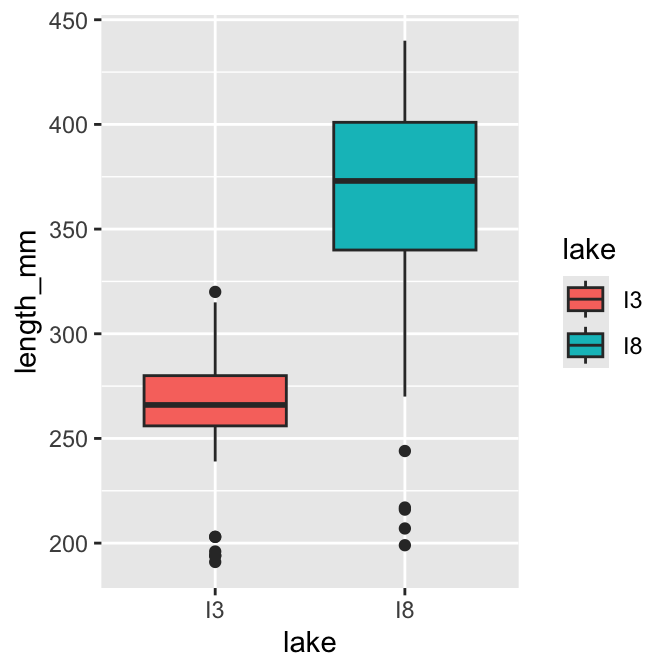
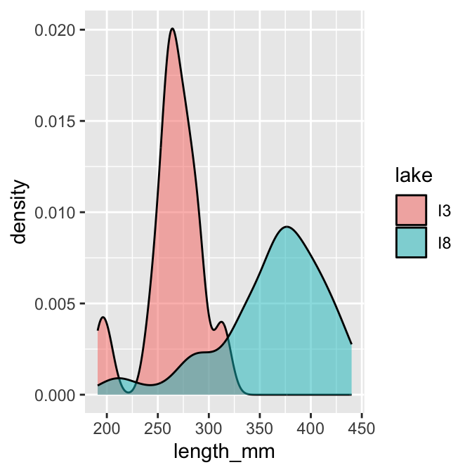

Hands-on activity: summaries and tidyverse data wrangling.
Author
Bill Perry
In class activity 3:
What did we do last time?
Implement data pipeline best practices
Apply controlled vocabulary and naming conventions
Create effective visualizations
Customize plots for publication quality
Combine multiple plots into composite figures
ggplot(name_df, aes(x_variable, y_variable, color = categorical_variable)) +# dataframe, aesthetics(x and y variables, mapping of color or fill or shape) + geom_point() +# this it the geometry you want and can add more layers likegeom_line()
What questions do you have and what is unclear
What did not work so far when you started the homework?
Objectives and goals for today
Today’s Objectives
Implement descriptive statistics in R
Calculate measures of central tendency and spread
Compare distributions of data from different groups
Create effective visualizations of descriptive statistics
Interpret the meaning of these statistics in a biological context

Part 1: Setting Up Your Environment
First, let’s load the necessary packages and import our data:
# Load required packageslibrary(moments) # For calculating skewness and kurtosislibrary(skimr) # for summary statslibrary(tidyverse) # For data wrangling and visualization
── Attaching core tidyverse packages ──────────────────────── tidyverse 2.0.0 ──
✔ dplyr 1.2.1 ✔ readr 2.2.0
✔ forcats 1.0.1 ✔ stringr 1.6.0
✔ ggplot2 4.0.3 ✔ tibble 3.3.1
✔ lubridate 1.9.5 ✔ tidyr 1.3.2
✔ purrr 1.2.2
── Conflicts ────────────────────────────────────────── tidyverse_conflicts() ──
✖ dplyr::filter() masks stats::filter()
✖ dplyr::lag() masks stats::lag()
ℹ Use the conflicted package (<http://conflicted.r-lib.org/>) to force all conflicts to become errors
Getting the data
TipPractice Exercise 1: Loading and Examining the Grayling Data
We’ll be working with data on arctic grayling fish from two different lakes (I3 and I8).
# Write your code here to read in the file# How do you examine the data - what are the ways you think and lets try it!# Load the grayling datag_df <-read_csv("data/gray_I3_I8.csv")
Rows: 168 Columns: 5
── Column specification ────────────────────────────────────────────────────────
Delimiter: ","
chr (2): lake, species
dbl (3): site, length_mm, mass_g
ℹ Use `spec()` to retrieve the full column specification for this data.
ℹ Specify the column types or set `show_col_types = FALSE` to quiet this message.
# How many fish do we have from each lake?summary(g_df)
site lake species length_mm mass_g
Min. :113 Length :168 Length :168 Min. :191.0 Min. : 53.0
1st Qu.:113 N.unique : 2 N.unique : 1 1st Qu.:270.8 1st Qu.:151.2
Median :118 N.blank : 0 N.blank : 0 Median :324.5 Median :340.0
Mean :116 Min.nchar: 2 Min.nchar: 15 Mean :324.5 Mean :351.2
3rd Qu.:118 Max.nchar: 2 Max.nchar: 15 3rd Qu.:377.0 3rd Qu.:519.5
Max. :118 Max. :440.0 Max. :889.0
NAs :2
Skimnr way of seeing summary stats
g_df %>%group_by(lake) %>%skim()
Data summary
Name
Piped data
Number of rows
168
Number of columns
5
_______________________
Column type frequency:
character
1
numeric
3
________________________
Group variables
lake
Variable type: character
skim_variable
lake
n_missing
complete_rate
min
max
empty
n_unique
whitespace
species
I3
0
1
15
15
0
1
0
species
I8
0
1
15
15
0
1
0
Variable type: numeric
skim_variable
lake
n_missing
complete_rate
mean
sd
p0
p25
p50
p75
p100
hist
site
I3
0
1.00
113.00
0.00
113
113.00
113
113.0
113
▁▁▇▁▁
site
I8
0
1.00
118.00
0.00
118
118.00
118
118.0
118
▁▁▇▁▁
length_mm
I3
0
1.00
265.61
28.30
191
256.00
266
280.0
320
▂▁▇▇▂
length_mm
I8
0
1.00
362.60
52.34
199
340.00
373
401.0
440
▁▂▃▇▆
mass_g
I3
0
1.00
150.50
42.22
53
130.75
147
177.5
260
▂▅▇▃▁
mass_g
I8
2
0.98
483.71
176.48
68
369.00
490
615.5
889
▂▃▇▆▂
Part 2: Visualizing Distributions
Visualizations can help us better understand the descriptive statistics we’ve calculated.
TipExercise 1: Creating Histograms
One of the best ways to look at data is a histogram - and we will do it again
# Create a histogram of all fish lengthsg_df %>%ggplot(aes(x = length_mm)) +geom_histogram(binwidth =15)

# Create histograms by lakeg_df %>%ggplot(aes(x = length_mm, fill = lake)) +geom_histogram(binwidth =15, position ="dodge", alpha =0.7)

TipExercise 2: Creating Box Plots
Personally I like box plots
# Create a box plot comparing fish lengths by lake# Create a box plot comparing fish lengths by lakeg_df %>%ggplot( aes(x = lake, y = length_mm, fill = lake)) +geom_boxplot()

TipExercise 3: Creating Density Plots
Now these will be really important later on
## Create density plotsg_df %>%ggplot(aes(x = length_mm, fill = lake)) +geom_density(alpha =0.5)

Part 2: Calculating Descriptive Statistics
Let’s calculate various descriptive statistics for our data:
TipPractice Exercise 4: Measures of Central Tendency
# Calculate the mean and median fish lengthmean(g_df$length_mm)
[1] 324.494
median(g_df$length_mm)
[1] 324.5
# Calculate mean and median by lakeg_df %>%group_by(lake) %>%summarise(mean_length =mean(length_mm),median_length =median(length_mm) )
# A tibble: 2 × 3
lake mean_length median_length
<chr> <dbl> <dbl>
1 I3 266. 266
2 I8 363. 373
Summarizing data - two ways
lets say we want to summarize the data and need to get n, means, standard deviation, standard error
We could do the following - if we had missing cells the code below would give an error
# Write your code here to read in the file# Calculate standard deviation and variancemean_length <-mean(g_df$length_mm, na.rm=TRUE)sd_length <-sd(g_df$length_mm)var_length <-var(g_df$length_mm)mean_length
[1] 324.494
sd_length
[1] 65.00659
var_length
[1] 4225.856
TipExercise 6: Calculate Quartiles and Percentiles